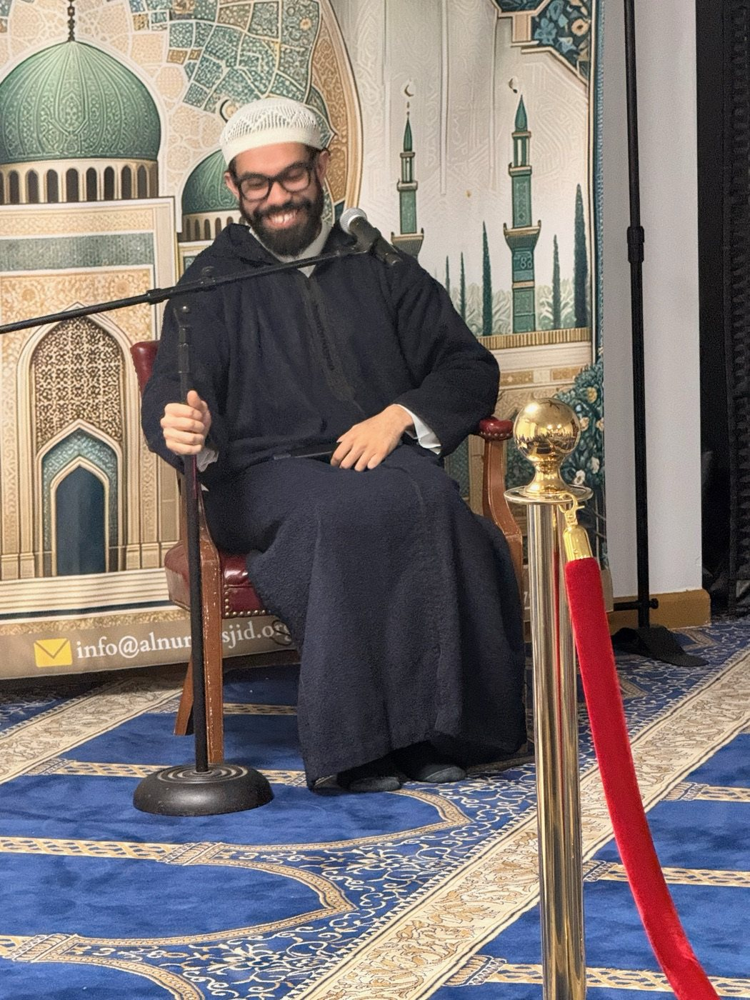

Daily Salah & Jumuah
Five daily prayers and Friday khutbah and salah, with live prayer times available from the homepage.
Alnur Mosque Islamic Center serves Muslims across Greater Louisville and Southern Indiana with daily salah, beneficial learning, family programs, and community support.
Opened in 2008, Alnur has grown into a diverse hub of spiritual, educational, and communal activity. We aim to provide sound guidance, beneficial resources, and a supportive environment where people can pray, learn, and connect.
Our vision is to strengthen educational initiatives, community outreach, and support systems while cultivating a welcoming and informed Muslim community grounded in the Quran and Sunnah.

Alnur supports worshippers, students, families, new Muslims, and neighbors through regular services and welcoming community spaces.
Five daily prayers and Friday khutbah and salah, with live prayer times available from the homepage.
Weekly halaqas, Quran learning, Islamic fundamentals, Arabic, and structured programs for children and adults.
Dedicated learning, brotherhood, recreation, and family programs that keep young Muslims connected to the masjid.
Nikah officiating and funeral support in accordance with Islamic guidelines, along with outreach and community events.
A small library, community hall, spacious parking area, and outdoor recreation space for community use.
Open Mosque Day, Eid gatherings, community meals, and opportunities to welcome neighbors and build understanding.
In response to the growing needs of the community, a dedicated group moved from a smaller space to Alnur's current location. The same spirit of cooperation continues to guide the masjid as it expands programs, supports families, and serves the broader community. May Allah reward everyone who has contributed to its growth.
Experienced community members work together to support the masjid's worship, education, and service.
President
Vice President
Secretary